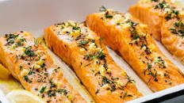

Baked Salmon Fillet Recipe

Ingredients:
- 4 salmon fillets (about 6 ounces each)
- 2 tablespoons olive oil
- 2 cloves garlic, minced
- 1 lemon, sliced
- 1 teaspoon dried oregano
- 1 teaspoon dried thyme
- Salt and pepper to taste
Instructions:
- Preheat your oven to 375°F (190°C).
- Place the salmon fillets on a baking sheet lined with parchment paper or a greased baking dish.
- In a small bowl, mix together the olive oil, minced garlic, dried oregano, dried thyme, salt, and pepper.
- Brush the olive oil mixture over the top of each salmon fillet.
- Place a lemon slice on top of each fillet.
- Cover the baking sheet or dish with aluminum foil.
- Bake in the preheated oven for 15-20 minutes, or until the salmon flakes easily with a fork and is cooked to your desired doneness.
- Remove the salmon from the oven and discard the foil.
- Serve the baked salmon fillets hot, garnished with fresh herbs or additional lemon slices if desired.
Enjoy your delicious Baked Salmon Fillet!